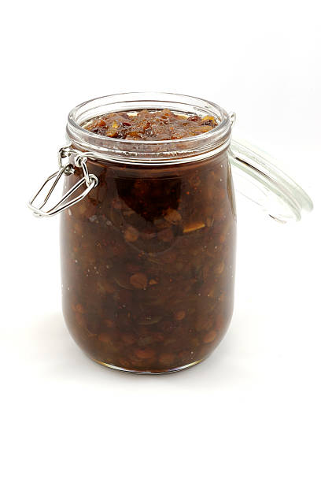

Sunset Apricot Chutney
From: Graziella + FBFC Scoop Newsletter

Description
Delicious sweet and spicy chutney. Serve with meats and stews
Ingredients
- 1 10oz jar of Sorrell Ridge apricot (or peach) preserves
- 1/2 tsp grated fresh ginger
- 1/3 cup raisins
- 1/4 cup snipped dried apples
- 1/2 cup garlic, finely minced
- 1 Tbls apple cider vinegar
- 1 Tbls frech lemon juice
- 1/4 tsp sea salt
- 1/2 tsp cinnamon or allspice
- 1/2 tsp ground black pepper
Steps
- Combine all ingredients and mix well
- Set aside for an our to let flavors blend
- Note: for a more tart chutney, simmer cranberries with preserves before adding other ingredients
Return to main recipe page